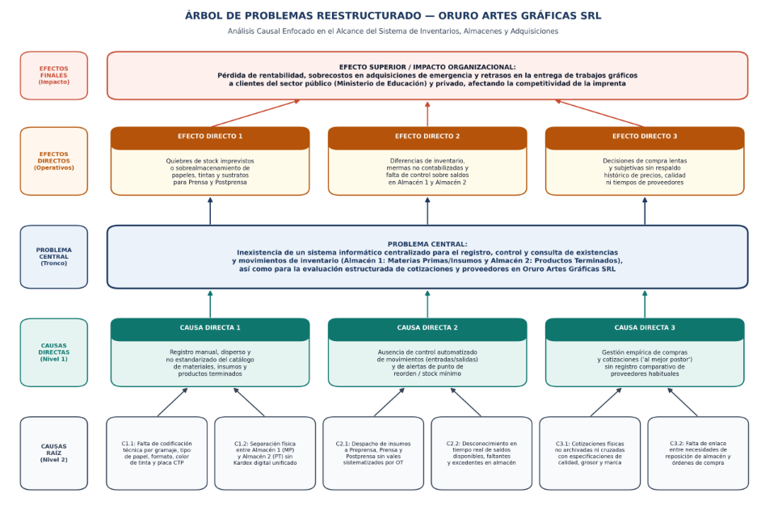

Sistema Informático de Control de Inventarios
Propuesta de análisis y diseño para la gestión centralizada de materias primas, insumos, productos terminados (Almacenes 1 y 2), alertas de reposición y cotizaciones de proveedores en Oruro Artes Gráficas S.R.L.
Carrera de Informática
Materia: "Análisis y diseño de sistemas" · Paralelo "A"
- • Chambi Barreto Carlos Ernesto
- • Mamani Leyva Abraham Severo
- • Mariscal Herrera Heidy Berenice
- • Martinez Contreras Mijael Wilmer
- • Narvaez Cruz Ariel Alex
- • Ohara Ticona Vladimir Kim
I. Generalidades y Marco Teórico
Antecedentes de Oruro Artes Gráficas S.R.L., maquinaria Heidelberg, almacenes, árbol de problemas, objetivos y planificación.
II. Análisis y Diseño Estructurado
Lienzo técnico con barra lateral para Requerimientos, Diagrama de Contexto, DFD por niveles, Diccionario y DER.
III. Diseño Orientado a Objetos
Selector de tarjetas para Casos de Uso, Diagrama de Clases, Secuencia, Actividades, Estados y Despliegue.
Tabla de contenido
Haz clic en cualquier apartado para abrir su vista independiente:
2. Introducción
El sector de la industria gráfica y de las imprentas artesanales y semiindustriales enfrenta el desafío de administrar adecuadamente las materias primas e insumos necesarios para sus actividades, considerando la variedad de materiales utilizados, sus diferentes características y la necesidad de mantener un equilibrio entre calidad y costos. En este contexto, el control de inventarios constituye un aspecto importante para conocer las existencias disponibles, identificar las necesidades de reposición y disponer de información organizada para apoyar la toma de decisiones.
Oruro Artes Gráficas S.R.L. es una empresa dedicada al diseño gráfico y a los servicios de impresión, que inició sus actividades en 2005 y cuenta con más de diez años de experiencia trabajando con clientes del sector privado y público, entre ellos el Ministerio de Educación. Para desarrollar sus actividades, requiere materias primas e insumos como papel, tintas, cartones y otros materiales relacionados con los trabajos de impresión. La disponibilidad de estos recursos es importante para organizar las adquisiciones y atender los requerimientos de sus clientes.
La empresa tiene como misión proporcionar soluciones de impresión de alta calidad que superen las expectativas de sus clientes, utilizando tecnología de vanguardia y un equipo comprometido con la excelencia. Asimismo, su visión es ser líder en la industria de impresión a nivel nacional e internacional, con reconocimiento por su innovación, calidad y compromiso con la sostenibilidad ambiental.
Actualmente, la empresa no cuenta con un sistema informático de inventarios que permita gestionar de manera centralizada la información sobre las materias primas e insumos disponibles. Esta situación plantea la necesidad de contar con un mecanismo organizado para registrar y consultar las existencias, controlar las entradas y salidas de materiales, conocer las cantidades disponibles e identificar posibles faltantes o excedentes. Asimismo, resulta importante disponer de información que facilite la determinación de las necesidades de reposición y la planificación de futuras adquisiciones.
Otro aspecto relacionado con la gestión de los materiales es la selección de proveedores. Parte de las adquisiciones se realiza considerando las alternativas disponibles en el mercado, buscando un equilibrio entre precio y calidad. Por ello, el sistema propuesto también contempla, dentro de su alcance, el registro y la comparación de cotizaciones, así como la organización de información que permita evaluar a los proveedores habituales. Estas funciones complementarán el control de inventarios y servirán como apoyo para la toma de decisiones de compra, sin sustituir el objetivo principal del proyecto.
Ante esta situación, el presente proyecto tiene como objetivo principal realizar el análisis y diseño de un sistema informático de inventarios para Oruro Artes Gráficas S.R.L., orientado al registro, control y consulta de las existencias y de sus movimientos. Para su desarrollo se aplicarán los enfoques de Análisis Estructurado y Análisis y Diseño Orientado a Objetos mediante UML, estableciendo una base de diseño para una futura implementación informática adaptada a las necesidades de la empresa.
3. Antecedentes de la Organización
Oruro Artes Gráficas S.R.L. es una empresa legalmente constituida en Bolivia, con domicilio legal en la avenida Núñez del Prado N.º 971, zona Ciudad Satélite. Cuenta con más de diez años de experiencia en la prestación de servicios gráficos a nivel nacional, desarrollando actividades relacionadas con el diseño, la preparación de artes para impresión, la impresión y los acabados gráficos. A lo largo de su trayectoria, ha trabajado con clientes del sector privado y público, entre ellos el Ministerio de Educación.
1.2.1 Infraestructura y maquinaria de producción
a) Preprensa
Preparación de archivos y elementos antes de realizar la impresión:
- 7 Computadoras de la Marca Mac: 3 utilizadas en diseño y preparación de trabajos gráficos, 1 de contabilidad, 1 de cotizaciones, 1 de jefatura y 1 sistema de cámaras.
- CTP (Computer to Plate): Equipo empleado para transferir los trabajos digitales a las planchas de impresión.
b) Prensa
Impresión de trabajos con maquinaria de la marca Heidelberg:
- Heidelberg Speedmaster 52 de cuatro cuerpos.
- Heidelberg Speedmaster 74 de dos cuerpos.
Su utilización requiere disponer oportunamente de materiales e insumos para cada trabajo.
c) Postprensa
Operaciones posteriores de acabado y presentación final (marca Heidelberg):
Dobladoras, Compaginadoras, Guillotinas, Estampadora, Plastificadora, Sectorizadora, Engrampadora, Emblocadora y Engarradoras.
1.2.2 Infraestructura de almacenamiento
- • Almacén 1 (Materias primas e insumos): Destinado al acopio de materiales utilizados en los trabajos gráficos, como papeles de distintos gramajes, cartones, vinilos, sustratos especiales y otros insumos de impresión.
- • Almacén 2 (Productos terminados): Destinado al almacenamiento de los productos gráficos que han concluido su proceso de elaboración y están listos para su entrega al cliente.
1.2.3 Infraestructura tecnológica
- 1 equipo asignado al control y monitoreo de las máquinas de producción.
- 1 equipo destinado al área contable y financiera (facturación y cobros).
- 3 equipos dedicados al taller de diseño gráfico (preprensa, diseño y validación de artes).
- 1 equipo destinado a la Jefatura o Dirección (supervisión y toma de decisiones).
- 1 equipo dedicado al sistema de seguridad electrónica (cámaras de videovigilancia y alarmas).
1.2.4 Gestión de proveedores
La selección busca una relación conveniente entre precio y calidad (marca, tipo de material, grosor), por lo que comparar cotizaciones y evaluar proveedores habituales es relevante para planificar adquisiciones.
1.2.5 Misión de la organización
Proporcionar soluciones de impresión de alta calidad que superen las expectativas de nuestros clientes, utilizando tecnología de vanguardia y un equipo comprometido con la excelencia.
1.2.6 Visión de la organización
Ser líderes en la industria de impresión a nivel nacional e internacional, reconocidos por nuestra innovación, calidad y compromiso con la sostenibilidad ambiental.
4. Planteamiento del Problema
Actualmente, Oruro Artes Gráficas S.R.L. no cuenta con un sistema informático de inventarios que permita registrar, controlar y consultar de manera organizada las existencias de materias primas e insumos utilizados en sus actividades de impresión. Esta situación plantea la necesidad de disponer de información precisa sobre las cantidades disponibles, las entradas y salidas de materiales y los requerimientos de reposición.
La variedad de materiales utilizados en la empresa, como papeles de diferentes gramajes, cartones, vinilos, tintas y otros insumos gráficos, hace necesario contar con un mecanismo que facilite su identificación y seguimiento. Asimismo, la falta de un sistema informático específico dificulta disponer de una herramienta centralizada para consultar las existencias y apoyar la planificación de las adquisiciones.
Por otra parte, la empresa considera diferentes proveedores para adquirir materiales según sus características, calidad y precio. Por ello, resulta conveniente organizar la información de las cotizaciones y de los proveedores habituales, de modo que pueda facilitarse la comparación de alternativas y apoyar las decisiones de compra.
5. Árbol de Problemas

EFECTOS / CONSECUENCIAS SUPERIORES
Retrasos en entregas al cliente
Demoras por falta imprevista de materiales o sustratos de impresión.
Sobreconsumo y merma de insumos
Desperdicio o extravío de insumos al no contar con kardex digital.
Pérdida de rentabilidad y competitividad
Adquisiciones de emergencia sin comparativa histórica de precios.
BAJA PRODUCTIVIDAD Y AUSENCIA DE CONTROL SISTEMATIZADO DE INVENTARIOS EN LA IMPRENTA
CAUSAS RAÍZ INFERIORES
Falta de integración operativa
Desconexión informativa entre Diseño, Almacenes (1 y 2) y Máquinas.
Gestión manual de compras ("Al mejor postor")
Falta de registro estructurado de cotizaciones y proveedores habituales.
Ausencia de trazabilidad
Falta de control automatizado de entradas, salidas y alertas de reposición.
6. Formulación del Problema
"¿De qué manera el análisis y diseño de un sistema informático de inventarios, desarrollado mediante los enfoques de análisis estructurado y análisis y diseño orientado a objetos con UML, permitirá mejorar la organización, el registro, el control y la consulta de las existencias de materias primas, insumos y productos terminados en Oruro Artes Gráficas S.R.L., facilitando el seguimiento de las entradas y salidas de materiales, la identificación de las cantidades disponibles y las necesidades de reposición, así como la organización de información sobre las cotizaciones y los proveedores habituales, con el propósito de apoyar la planificación de las adquisiciones y contribuir a una gestión de inventarios más ordenada y eficiente, de acuerdo con las necesidades operativas de la empresa?"
7. Propósito del Estudio (Objetivo General y Específicos)
1.6.1.1 Objetivo General
Realizar el análisis y diseño de un sistema informático de inventarios para Oruro Artes Gráficas S.R.L., aplicando los enfoques de Análisis Estructurado y Análisis y Diseño Orientado a Objetos mediante UML, con la finalidad de establecer una propuesta que permita organizar el registro, control y consulta de las existencias, gestionar los movimientos de materiales y facilitar la planificación de las reposiciones, considerando las necesidades operativas de la empresa.
1.6.1.2 Objetivos Específicos
Recopilar información sobre los procesos actuales de inventario de Oruro Artes Gráficas S.R.L. mediante entrevistas, observación y revisión de la información disponible, con el propósito de identificar las necesidades de la empresa y los requerimientos del sistema propuesto.
Analizar los requerimientos funcionales y las necesidades de información del sistema, delimitando la gestión de materias primas, insumos, productos terminados, almacenes, entradas, salidas, existencias y reposiciones, así como la información complementaria de cotizaciones y proveedores habituales.
Modelar los procesos y flujos de información del sistema mediante Análisis Estructurado, elaborando el diagrama de contexto y los diagramas de flujo de datos correspondientes, con la identificación de los procesos, las entidades externas, los almacenes de datos y los flujos de información.
Diseñar el modelo conceptual del sistema mediante UML, elaborando el diagrama de clases con sus atributos, métodos, asociaciones, herencia, agregación o composición cuando corresponda y multiplicidades, de acuerdo con los requerimientos identificados.
Integrar los resultados del análisis y diseño en una propuesta coherente del sistema de inventarios, incluyendo el modelo de datos preliminar y la representación de la interfaz del usuario, de manera que los elementos propuestos respondan a las necesidades identificadas y sirvan como base para una futura implementación informática.
8. Método, Medios e Instrumentos de Investigación, Justificación y Alcances
1.7.1 Método
- • Enfoque sistémico: Comprende la gestión de inventarios como un conjunto de elementos relacionados (materiales, almacenes, proveedores, entradas y salidas).
- • Método analítico: Examina por separado el registro de materiales, control de cantidades, movimientos, reposición y cotizaciones.
- • Método sintético: Integra la información obtenida para establecer una visión general del sistema y sus funciones.
1.7.2 Medios de investigación
- • Observación directa: Observación de las actividades de almacenamiento y utilización de materias primas e insumos en los Almacenes 1 y 2.
- • Análisis documental: Revisión de registros de materiales, órdenes de trabajo, comprobantes, cotizaciones y facturas.
- • Consulta al personal: Recopilación de información del personal de almacenamiento, adquisición y utilización de materiales.
1.7.3 Instrumentos
- • Guía de entrevista: Dirigida a Jefatura/Dirección, personal de almacén, área contable, diseñadores y operarios.
- • Guía de observación: Registro de identificación de productos, recepción de insumos, salidas y consulta de existencias.
- • Ficha de revisión documental: Organización de nombre/código del material, unidad de medida, cantidad, fecha y proveedor.
Justificación del Proyecto
El diseño del sistema informático se justifica al proporcionar a Oruro Artes Gráficas S.R.L. un mecanismo organizado y centralizado que evita quiebres de stock en tirajes de impresión, controla las entradas y salidas de materiales y respalda las decisiones de compra con información comparativa de cotizaciones.
Alcances y Delimitación
El alcance comprende la gestión de materias primas e insumos (Almacén 1), productos terminados (Almacén 2), movimientos de entrada/salida, alertas de reposición y registro de cotizaciones y proveedores habituales. No abarca el control de tiempos de producción ni el mantenimiento de las máquinas Heidelberg.
9. Planificación de Actividades
Planificación por fases, tareas y cronograma de entregas del proyecto (Gestión 2026):
| Fase / Tarea del Proyecto | Sem 1–2 Oct | 27–29 Oct 2026 | Noviembre 2026 | Diciembre 2026 |
|---|---|---|---|---|
| Fase 1: Levantamiento de información y diagnóstico en Oruro Artes Gráficas S.R.L. | ||||
| Fase 2: Elaboración Parte I (Generalidades y Marco Teórico) y Publicación del Sitio Web | ||||
| Fase 3: Modelado Parte II (Análisis y Diseño Estructurado: DFD, Diccionario y DER) | ||||
| Fase 4: Modelado Parte III (Orientado a Objetos con UML, Prototipos y Defensa Final) |
Análisis y Diseño Estructurado
2.1 Especificación de Requerimientos del Sistema
Delimitación de requerimientos funcionales y no funcionales para el control de los Almacenes 1 y 2, entradas, salidas, stock mínimo y cotizaciones.
Espacio reservado para la tabla o documento de Requerimientos
Reemplaza este bloque en el código HTML descomentando o insertando la imagen o tabla correspondiente a esta etapa del Análisis Estructurado.
Análisis y Diseño Estructurado
2.1 Especificación de Requerimientos
Descripción de requerimientos...
Espacio reservado para contenido
Análisis y Diseño Orientado a Objetos
Diagrama de Casos de Uso del Sistema
Vista Funcional / ActoresRepresentación de las interacciones...